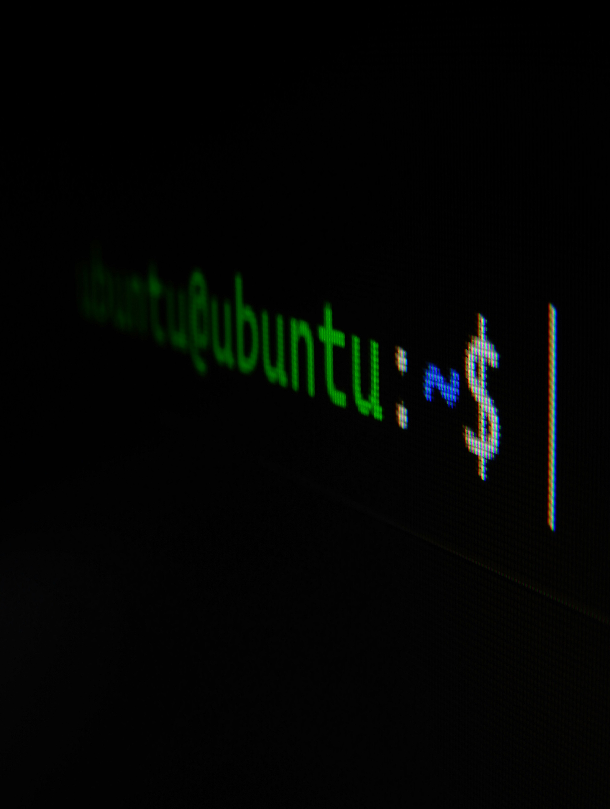
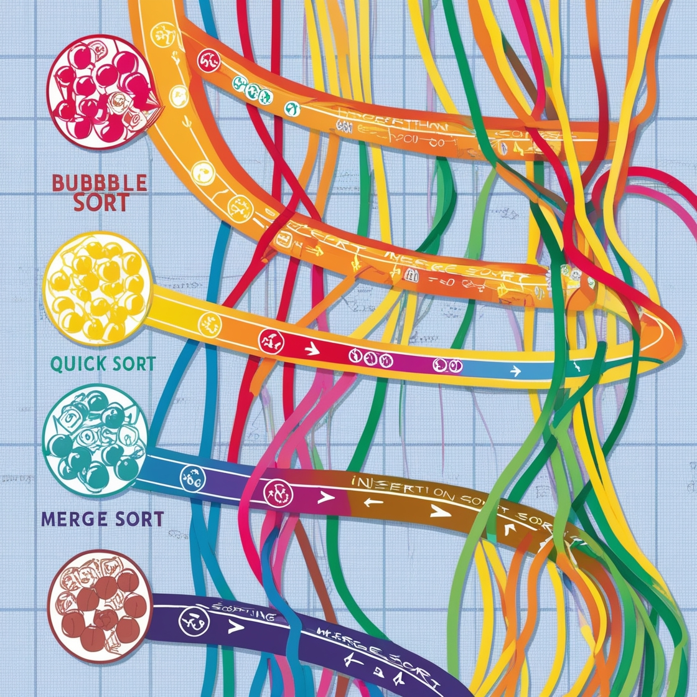
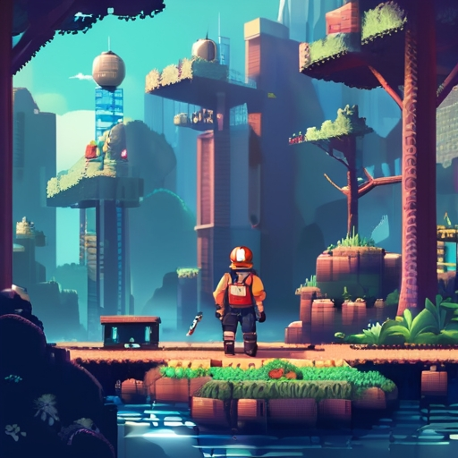

-
1337 Nov 2023 - Dec 2026My journey into the world of web development began on October 29, 2023, when I started my studies at 1337 Coding School in Morocco. This marked the start of an exciting new chapter in my life, as I immersed myself in the dynamic and ever-evolving field of technology. At 1337 Coding School, I have been honing my skills in various programming languages, frameworks, and technologies, equipping myself with the tools necessary to create innovative and user-friendly web applications. This rigorous training has not only sharpened my technical skills but also fostered a deep appreciation for the art of coding. As I continue my studies, I look forward to further expanding my knowledge and pushing the boundaries of what I can achieve in the realm of web development.
-
Faculty Jan 2020 - Jun 2022In 2022, I received my law degree from the Faculty of Law in Agadir. This rigorous program provided me with a comprehensive understanding of legal principles and practices. The analytical skills and attention to detail required in law studies have been invaluable in my coding career, particularly when it comes to understanding complex systems and ensuring accuracy in my work.
-
Bacaloria Nov 2018 - Jun 2019In 2019, I earned my Bachelor's degree in Humanities from a renowned institution in Tata City. This educational journey was a crucial stepping stone, providing me with a broad understanding of various disciplines and fostering critical thinking skills. Although my career path eventually led me to web development, the analytical and communication skills I gained during my humanities studies have proven invaluable in understanding user needs and creating user-friendly digital solutions.
About Me
As a passionate web developer, I have honed my skills through rigorous training at 1337 Coding School in Morocco. Armed with a bachelor's degree, I embarked on a journey to delve deep into the world of web development, eager to make my mark in the digital landscape.
My time at 1337 Coding School has been transformative, equipping me with a robust understanding of various programming languages, frameworks, and technologies essential for modern web development. Through hands-on projects and collaborative learning, I have gained proficiency in front-end and back-end development, mastering the art of crafting dynamic and user-friendly websites and web applications.
Driven by a relentless curiosity and a thirst for innovation, I am constantly seeking to expand my knowledge and stay abreast of the latest trends and advancements in the field. Whether it's harnessing the power of JavaScript frameworks like React and Node.js, or delving into the intricacies of database management systems, I approach every challenge with enthusiasm and a determination to push boundaries.
With a solid foundation in computer science and a passion for problem-solving, I bring a unique blend of creativity and technical expertise to every project I undertake. From conceptualization to execution, I thrive in collaborative environments, leveraging my skills to transform ideas into seamless digital experiences that captivate and engage users.
As I continue on my journey as a web developer, I am excited to apply my knowledge and skills to create innovative solutions that make a meaningful impact in the ever-evolving world of technology.
My Projects

Minishell
Minishell
The Minishell project at 42 School is a fundamental exercise in understanding and implementing a basic Unix shell.

Push_Swap
Push_Swap
The Push Swap project challenges students to devise an efficient algorithm for sorting a stack of integers using a limited set of operations. With an emphasis on algorithmic optimization and problem-solving skills.

So_Long
So_Long
The So_Long project at 42 School is a graphics-related project that focuses on creating a simple 2D game using the MiniLibX, a graphics library provided by the school.
Philosopher
Philosopher
The Philosopher Project at 42 School is an innovative and collaborative effort focused on understanding and implementing multi-threading in software development.
Push_Swap
Push_Swap
The Push Swap project challenges students to devise an efficient algorithm for sorting a stack of integers using a limited set of operations. With an emphasis on algorithmic optimization and problem-solving skills.
So_Long
So_Long
The So_Long project at 42 School is a graphics-related project that focuses on creating a simple 2D game using the MiniLibX, a graphics library provided by the school.